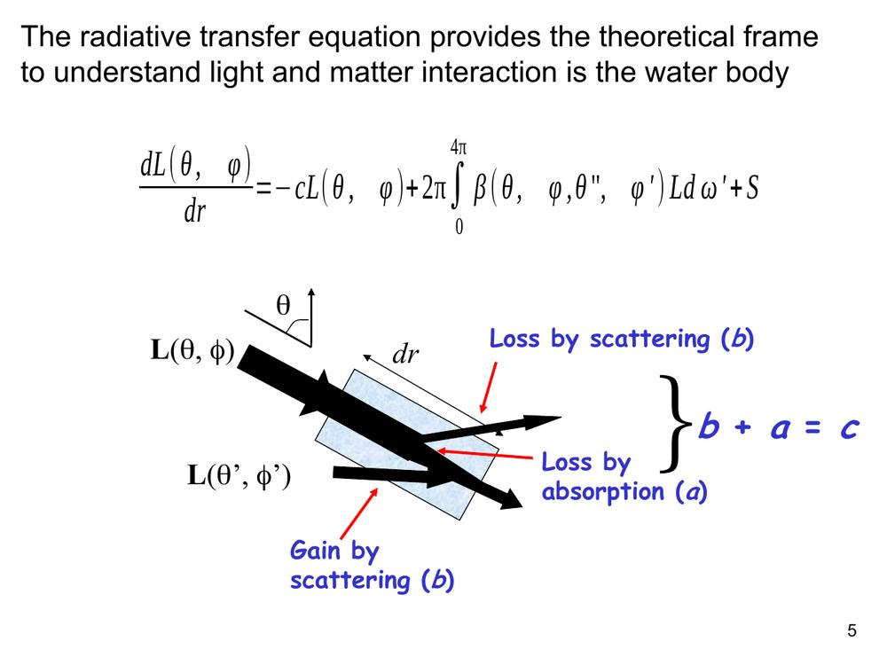
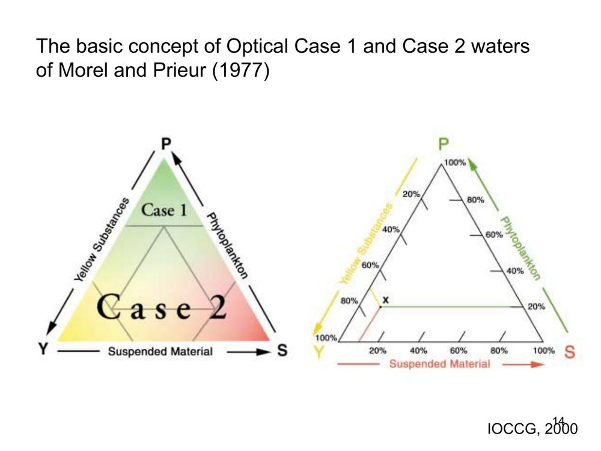
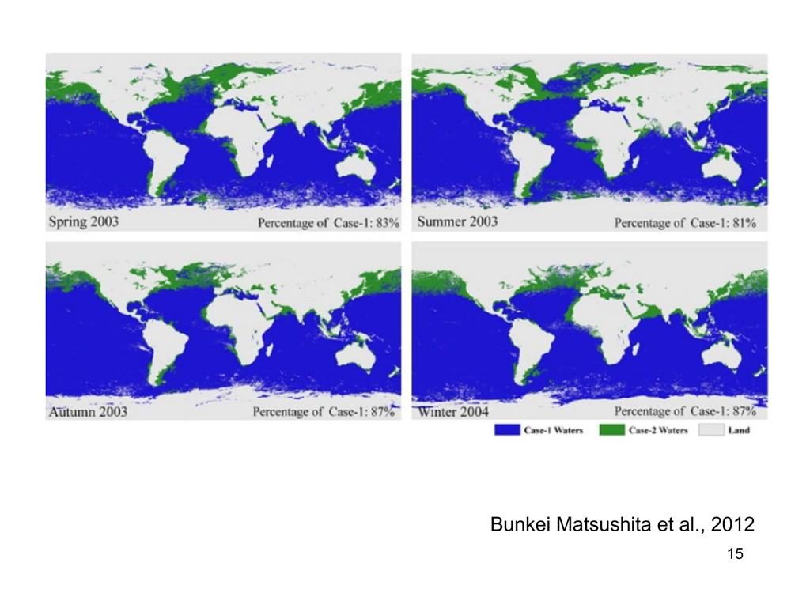

A · Light in water & IOPs
Radiative transfer, a, b, c, the volume scattering function, additivity, Case 1/Case 2 (slides 2–19)
Why light–water interaction matters
Light-dependent processes
Photosynthesis, visibility, predator–prey relations, vertical migration (slide 3)
In-situ studies
Biogeochemical and physical processes at high frequency and over long periods (slide 3)
Space
Exploitation of the ocean-colour signal from space (slide 3)
Ocean colour is not surface reflection
- Ocean colour: spectral variations of the water-leaving signal in the visible
- Sun and sky reflection changes the colour at the surface but is not ocean colour
- It comes from photons interacting with in-water components (slide 7)
- Marine optics links components → IOPs → light field (slide 8)
Radiative transfer in a water slab

Lecture slide 5
- Loss by absorption (a)
- Loss by scattering (b)
- Gain by scattering (b)
- c = a + b
- Source term S (fluorescence, Raman…)
Absorption and the volume scattering function

Lecture slide 17
- a in m⁻¹
- β(ψ,λ) in m⁻¹ sr⁻¹: angular distribution of scattered power
- Everything else is derived from a and β
Scattering coefficients
| Quantity | Definition | Unit |
|---|---|---|
| b | 2π ∫₀^π β(θ) sinθ dθ | m⁻¹ |
| bf | 2π ∫₀^{π/2} β(θ) sinθ dθ | m⁻¹ |
| bb | 2π ∫π/2^π β(θ) sinθ dθ | m⁻¹ |
| c | a + b = a + bf + bb | m⁻¹ |
Reminder
a, b, c in m⁻¹; β in m⁻¹ sr⁻¹; bf and bb split the same b at 90°The radiative transfer equation
b, bf, bb and c from β
Additivity of IOPs
Absorption
a = aw + aCDOM + aph + aNAP
Scattering
b = bw + bp
Backscattering
bb = bbw + bbp
Optically significant constituents
Pure sea water
Molecules and salt
Particles > 0.2 µm
Phytoplankton, bacteria, detritus, minerals
Dissolved matter
CDOM (yellow substance)
Air bubbles
Near the surface
Case 1 and Case 2 waters

Lecture slide 14 (IOCCG, 2000)
- P phytoplankton
- Y yellow substances
- S suspended material
- Case 1: band near P
- Case 2: Y and S vary independently
Case 1 share of the ocean

Lecture slide 15 (Matsushita et al., 2012)
- Spring 2003: 83 %
- Summer 2003: 81 %
- Autumn 2003: 87 %
- Winter 2004: 87 %
- Case 2 also at high latitudes
Optical water classes

Lecture slide 16 (Loisel et al., 2023)
- 17 classes
- Violet: clearest gyres
- Green/red: coastal, polar
- A continuum, not two boxes
Key points
- c = a + b; β in m⁻¹ sr⁻¹
- IOPs: independent of illumination, additive
- Ocean colour ≠ surface reflection
- Case 1/2 = co-variation; 17 optical classes